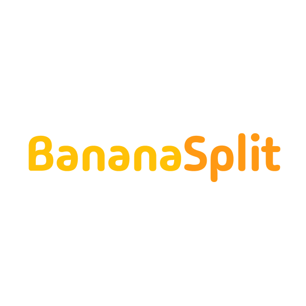
Banana Split
A collaborative grocery shopping app designed to help university students save money and reduce food waste by sharing bulk purchases.
My Role
UX Designer & Researcher
Team Size
4 members
Duration
2 months
Results
Designed a grocery splitting app to help students save money and reduce food waste.
User Research
To better understand the grocery shopping challenges faced by university students living away from home, we conducted interviews with students at the University of Waterloo. Our research revealed several key pain points:
- Difficulty in affording groceries while managing tuition and rent
- Struggles with food waste when buying in bulk
- Limited storage space in student accommodations
These insights helped us define key themes which helped shape our problem statement.
Key Themes
Shopping Preferences
Students primarily shop at Costco, T&T, and No Frills due to their affordable prices, large selection, and convenient locations.
Budget Awareness
All participants were budget-conscious and compared prices in-store. However, only a few proactively research prices beforehand.
Transportation Barriers
Public transit limits how much students can carry, impacting how often they shop and which stores they choose.
Desire for Tools
Participants expressed interest in tools to help them coordinate shopping trips, split costs, and compare prices ahead of time.
Problem Statement
Grocery shopping is an essential part of university student life, and can pose problems when it comes to managing financial constraints. University students have noticed that groceries have become more expensive, and having that on top of tuition and housing expenses affects their nutrition.
According to CBC News, food prices in 2025 could increase by 5% (Heydari 2024). Existing research shows that food costs are on the rise, and in consequence affordability becomes an important factor when it comes to grocery shopping.
According to Investopedia, buying in bulk does decrease the cost per unit, but often leads to overconsumption and waste. As a result, students miss out on savings and food.
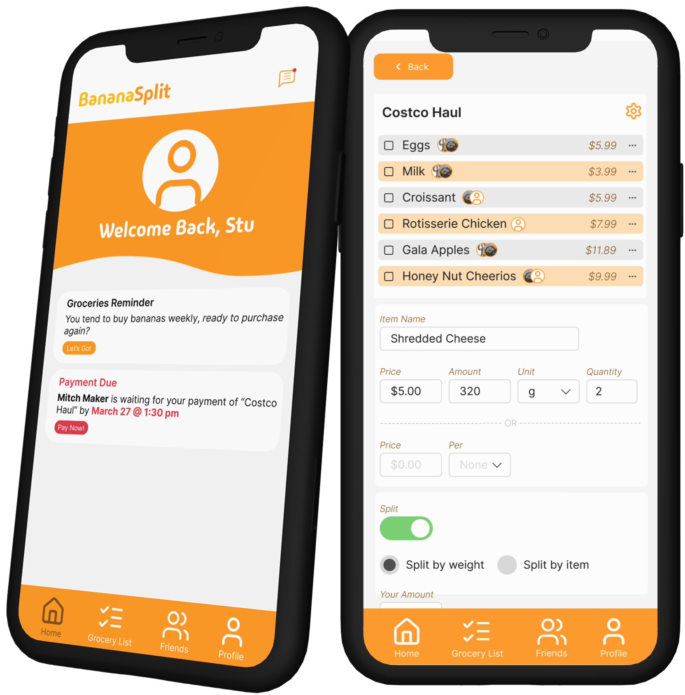
Our Solution
BananaSplit is a mobile app designed to help university students save money and reduce waste by making grocery shopping more collaborative. It connects students with others nearby who are interested in splitting bulk grocery purchases.
Key Features
- Private Lists: Track your personal items separately from shared purchases
- Split Items: Easily divide groceries with others using the app's intuitive interface
- Built-in Payment: Make secure payments within the app—no more awkward payment chasing
- Group Management: Create and manage shopping groups with friends or roommates
- Deal Alerts: Get notified about bulk deals and group purchase opportunities
Usability Testing
To evaluate our app's user-friendliness and effectiveness, we conducted comprehensive usability testing.
- Began with low-fidelity paper prototypes to observe initial interactions
- Followed up with additional walkthroughs using high-fidelity digital prototypes
- Used the System Usability Scale survey to gather quantitative feedback
- Implemented iterative improvements based on user feedback
| Issue | Importance | Solution |
|---|---|---|
UI Navigation
|
Critical for user navigation and accessibility | Improved button visibility and text contrast |
| Payment Confirmation | Essential for user trust and security | Added clear confirmation dialogs |
| Notification System | Important for user engagement | Enhanced visual hierarchy and urgency indicators |
| Search Functionality | Key for efficient item addition | Improved search button placement and visibility |
UI Gallery

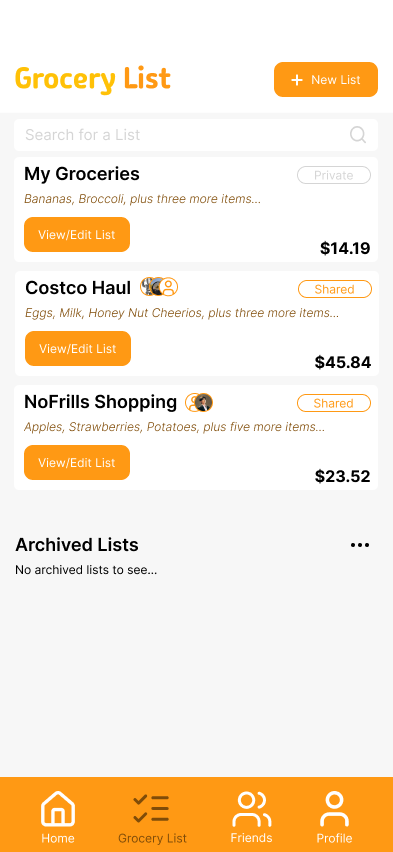
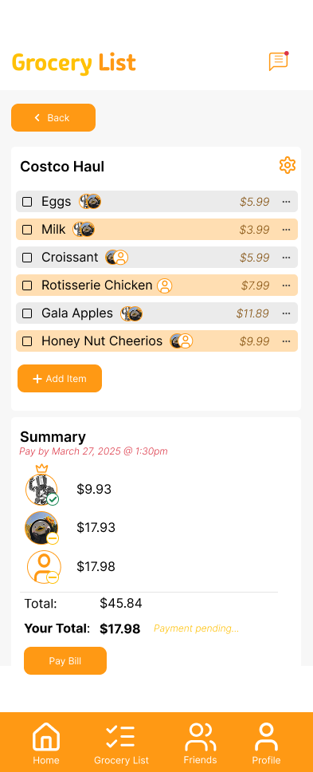
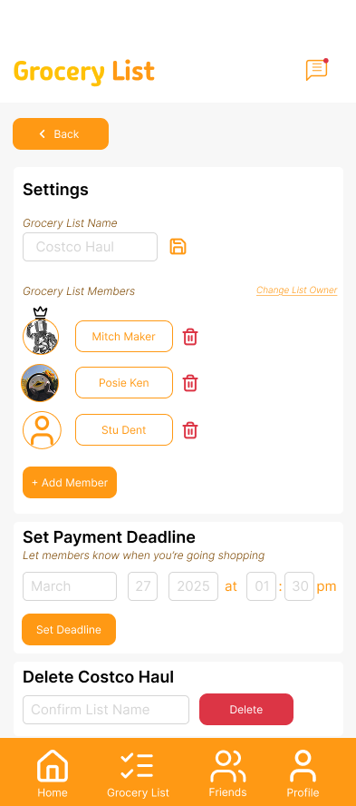
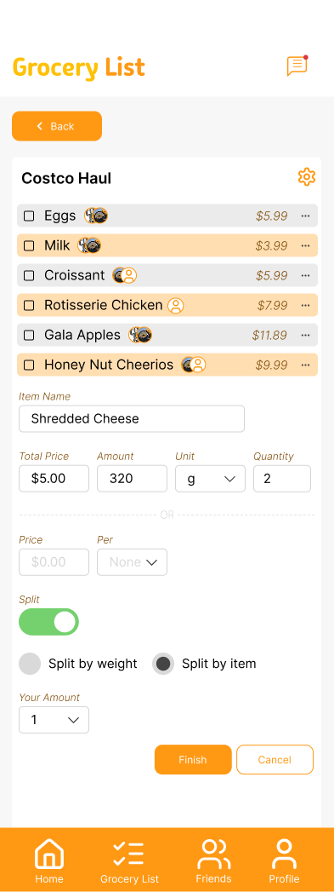
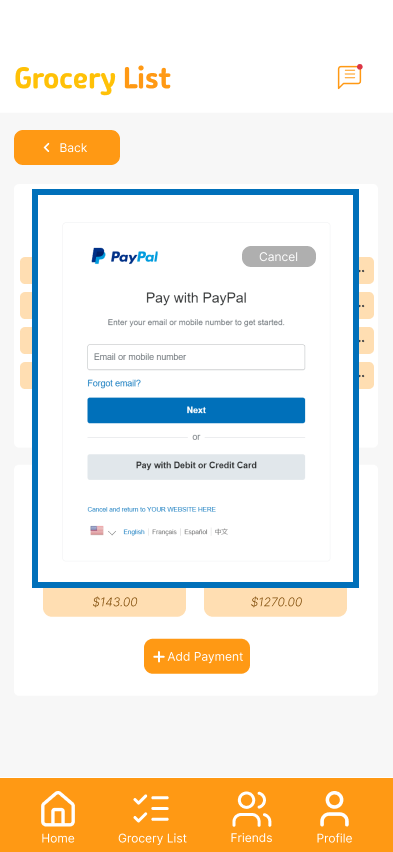
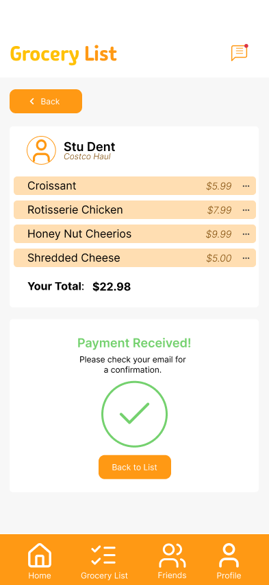
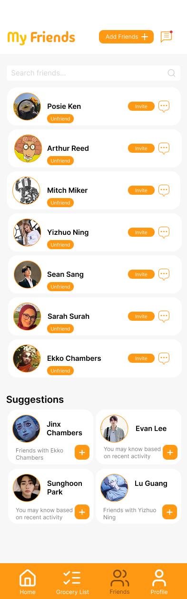
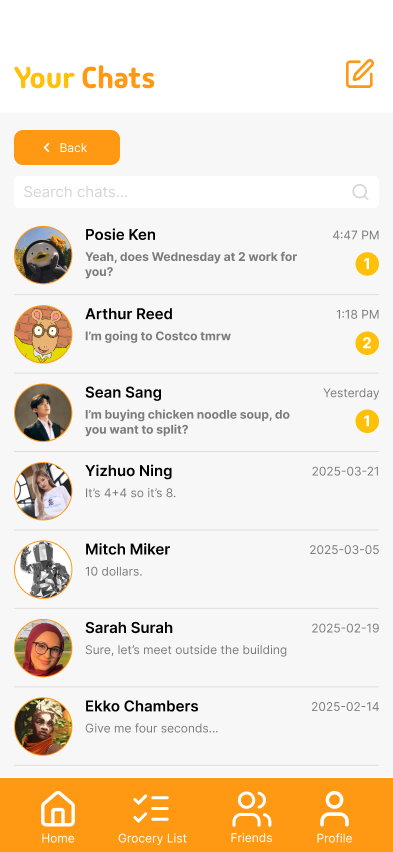
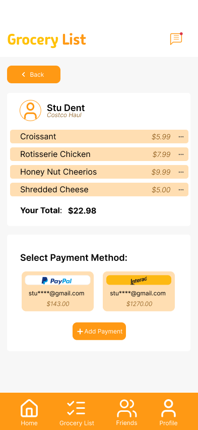
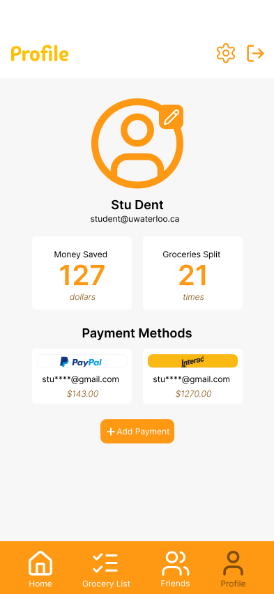
Contributions
My main focus was on creating an intuitive experience that made cost-sharing feel seamless and intuitive. I did my own user research and testing through interviews and usability testing sessions. I also designed the profile and payment pages, and helped make iterations based on user feedback on other UI screens.
Reflection
Through this project, I gained a lot of experience in developing user-centered solutions, and simultaneously sharpened my UX research and UI design skills. More importantly, it taught me how to build solutions that go beyond personal experience and meet the needs of a broader audience. Listening to users at every step shaped a stronger, more relevant product.